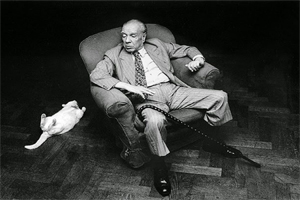

Jorge Luis Borges, nascido em 1899, foi um renomado escritor argentino considerado um dos maiores expoentes da literatura do século XX. Sua obra transcendeu fronteiras e conquistou admiradores em todo o mundo, deixando um legado duradouro e influente.
Borges era conhecido por sua prosa elaborada e repleta de referências literárias e filosóficas. Sua escrita explorava temas como o tempo, a memória, a identidade e a natureza da realidade. Combinando elementos do realismo mágico, do simbolismo e do existencialismo, suas histórias se desenrolavam em mundos imaginários, labirintos literários que desafiavam as convenções narrativas tradicionais.
Além de ser um mestre da ficção, Borges também foi um ensaísta prolífico, abordando temas que variavam desde a literatura clássica até a metafísica. Suas reflexões sobre o poder da linguagem, a natureza da interpretação e a natureza do tempo tiveram um impacto profundo no campo dos estudos literários.
Borges era um verdadeiro erudito, com uma vasta gama de conhecimentos que abrangiam desde a literatura clássica até a matemática e a filosofia. Sua obra é repleta de referências a escritores e pensadores de várias épocas, refletindo sua paixão pela busca do conhecimento e sua crença no poder da literatura como forma de explorar e compreender o mundo.